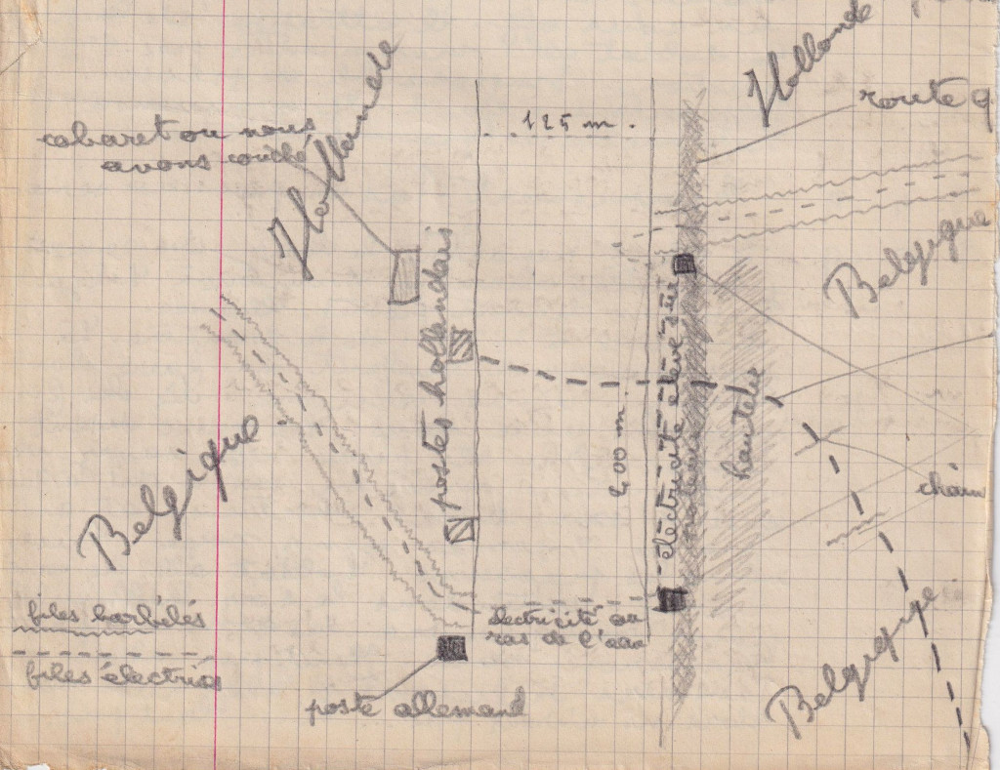

Août-septembre 1915 - Évasion de Lille, passage du canal entre Gand et Terneuzen, et renseignements livrés à l’armée britannique
Août-septembre 1915 - Évasion de Lille, passage du canal entre Gand et Terneuzen, et renseignements livrés à l’armée britannique
Pour situer ce document
Claude Saint-Léger (1897-1944) a dix-huit ans et vit dans Lille occupée depuis octobre 1914. Le 23 août 1915, à quatre heures du matin, il quitte la ville avec son cousin Maxime Descamps (1897-1953), dit Max. Treize jours plus tard, ils passent en Hollande à la nage. Mais l’évasion n’est que la moitié de l’affaire. Avant de partir, Claude a repéré et mémorisé les tranchées et les emplacements des batteries allemandes autour de la ville. Ce n’est pas un renseignement qu’on lui soutirera plus tard, c’est une décision prise à Lille, et elle transforme une évasion en mission : pris avec cela dans la tête, il ne relève plus des travaux forcés mais du peloton. On lit ici son carnet, tenu au jour le jour, les deux lettres qu’il fait passer à sa mère Marguerite Delemer (1876-1953) restée à Lille, et les huit pièces qui conduisent ce garçon de dix-huit ans, le 24 septembre 1915, au quartier général avancé de la 1re Armée britannique. Les blancs du carnet, marqués par des tirets bas, sont ceux de l’original.
Le contexte
Depuis octobre 1914, Lille est allemande. Le Nord et une partie de l’Aisne forment les régions envahies, coupées de la France non envahie. Un garçon de la classe 1917 qui veut rejoindre l’armée française n’a qu’une route : la Belgique occupée, puis la Hollande neutre.
Cette route vient de se refermer. Depuis avril 1915, les Allemands dressent le long de la frontière belgo-néerlandaise une clôture électrifiée de plusieurs centaines de kilomètres, mise sous tension le 24 juillet 1915. Les Belges l’appellent « De Dodendraad », le fil de la mort. Claude part un mois après. Cela éclaire ce que ses hôtes gantois lui répètent, que trois mois plus tôt c’était encore possible, et le fait que les passeurs consultés n’aient plus un seul système qui tienne. Reste l’eau. Le canal de Gand à Terneuzen coupe la frontière et la clôture s’y interrompt. C’est par là qu’ils passent, à la nage, le dimanche 5 septembre au soir.
Ce qui suit compte davantage, et se joue avant même le départ. La citation du colonel de Barry, en 1917, portera au crédit de Claude des renseignements très précis sur les tranchées et l’emplacement des batteries allemandes devant Lille. Il ne les a pas improvisés en route : il les a réunis dans la ville occupée, puis portés dans sa tête pendant treize jours. C’est un choix, et il déplace le risque tout entier. Un évadé pris avec de faux papiers encourt les travaux forcés, barème que Claude dresse lui-même après le passage. Un évadé porteur de renseignements militaires relève de l’espionnage, et l’espionnage se juge en cour martiale allemande.
Ce n’est pas une abstraction en 1915. Le 23 septembre, la veille du jour où Claude est conduit au front britannique, Joseph Baekelmans et Alexandre Frank sont fusillés au Tir national de Bruxelles pour avoir travaillé au profit d’un service de renseignement britannique. Trois semaines plus tard, au même endroit, Edith Cavell et Philippe Baucq. Claude et Max avaient dormi à Bruxelles dans la nuit du 24 au 25 août.
Que Claude ait été seul à porter ce risque, l’armée l’a écrit. Max Descamps est cité lui aussi pour cette évasion, à l’ordre du 1er corps de cavalerie le 15 août 1917 : la citation dit Lille, le canal traversé à la nage, la Hollande, l’Angleterre, la bravoure exceptionnelle. Elle ne dit pas un mot de renseignement. Celle de Claude, quatre mois plus tôt, en fait au contraire le motif principal. Les deux garçons ont couru la même route, mais pas le même risque.
Le reste est une chaîne de papiers. Claude est interrogé à Folkestone le 9 septembre par un officier français du service d’espionnage. À Paris, son ami Jacques Barrois transmet le 12 septembre ce qu’il rapporte à la Mission militaire française attachée à l’armée britannique. Le général Huguet répond le 21 : l’état-major anglais en veut davantage et convoque Claude à Saint-Omer. Le 24 septembre, un laissez-passer de la Section de renseignement, valable pour cette seule journée, le conduit au quartier général avancé de la 1re Armée britannique, à Hinges. Le lendemain matin à six heures et demie, cette armée attaque à Loos. Rien ne dit que ces renseignements aient pesé sur un plan arrêté de longue date : le rapprochement est chronologique, non causal.
Dates repères, août-septembre 1915
- 23 août : départ de Lille à 4 h avec Max Descamps, sous de faux passeports. Date également portée par la citation du colonel de Barry et par l’état des services.
- 25 août : accord avec un passeur, 800 francs payables contre le mot de passe « Sommes guéris » écrit de la main de Claude. Pièce distincte, conservée à part.
- 26 août : à Gand, le passeur annonce que tous les moyens de passage ont sauté.
- 1er septembre : première tentative, abandonnée devant Bassevelde après une nuit d’attente sous la pluie.
- 3 septembre : deuxième tentative, arrêtée à cent mètres de la Hollande devant la clôture électrifiée.
- 5 septembre : passage du canal de Gand à Terneuzen à la nage, dans la soirée. Le carnet et la mention portée sur le pli de la dernière lettre concordent.
- 7 septembre : passeport de l’agence consulaire de France à Flessingue, n° 1101.
- 8 septembre : débarquement à Tilbury, cachet du passeport.
- 9 septembre : interrogatoire au consulat de France à Folkestone par un commandant du service d’espionnage.
- 10 septembre : visa du consul de France à Folkestone, débarquement à Dieppe, arrivée à Paris.
- 12 septembre : Jacques Barrois transmet ses renseignements à la Mission militaire française attachée à l’armée britannique. Lettre connue seulement par la réponse.
- 21 septembre : le général Huguet invite Claude à Saint-Omer pour l’état-major britannique.
- 22 septembre : sauf-conduit de la préfecture de police pour Calais puis Saint-Omer.
- 24 septembre : laissez-passer de la Section de renseignement du G.Q.G. britannique et permis automobile pour Hinges, quartier général de la 1re Armée.
- 25 septembre : la 1re Armée britannique attaque à Loos. Hors fonds, pour situer.
- 20 octobre : engagement volontaire au 32e régiment de dragons, à Versailles. Hors carnet, d’après l’état des services.
Le carnet d’évasion, 23 août - 14 septembre 1915
Lundi 23/08/1915 - Lille - Mouscron
Départ de Lille à 4 h. Frontière belge. Un faux passeport pour Max et moi. Carte d'identité demandée à Max. Nous couchons à Mouscron.
Mardi 24/08/1915 - Mouscron - Bruxelles
Nous voyons le passeur. Rendez-vous fixé pour jeudi à Gand.
Départ de Mouscron à 4 h. Faux passeport jusqu'à Bruxelles. Nous avons corrigé les chiffres de mon passeport et cela se voit. Il est indiqué 1 m 57, en réalité je fais 1 m 72. Mon âge : 15 ans, alors que j'en ai 18. Ma photo est posée avec un faux cachet. Max a une photo qui lui ressemble.
Mouscron – Pecq – Tournai : chemin vicinal ___. Dîner à Tournai. L'aubergiste dit que les Allemands examinent les laissez-passer de très près dans le train. Je bavarde, nous jouons notre rôle. Soudain ils se demandent si nous ne serions pas allemands. Émotion, émotion dans le train. Nous arrivons à Bruxelles à 11 h 30. Nous couchons chez Desmedt.
Mercredi 25/08/1915 - Bruxelles - Gand
Bruxelles - ____ sans incident. Poste à l'entrée d'Alost. Difficulté pour se faire comprendre. Un gamin nous conduit par des petits chemins où une patrouille avait ramassé des gens 20 minutes avant. Déjeuner à Alost. Alost jusqu'à Gand à pied. Melle est détruit. Nous arrivons à Gand à 4 h. Quelqu'un nous invite à coucher car il est impossible de loger dans les auberges sans laissez-passer. Regrettent pas 3 mois avant : maintenant c'est impossible.
Jeudi 26/08/1915
Rendez-vous avec le passeur mouscronois. Tous les moyens ont sauté. Ne vaut-il pas mieux retourner à Bruxelles ?
Vendredi 27/08/1915
Toujours rien de nouveau, on cherche, on démarche.
Un soldat allemand de 18 ans dans un cabaret, raconte sur une carte où il est posté. L'aubergiste me pousse pour m'éloigner. Un soldat le voit. Il pense que nous sommes des espions. Il va chercher un officier. Nous filons. Un officier allemand revient. Il demande notre signalement. Il ressort en disant : il y a bien assez d'espions ici !
Samedi 28 à mardi 31/08/1915
Nous changeons de logement, et partons pour Bruxelles ?
Mercredi 01/09/1915
Départ de Gand à 4 h 30. Nous dépassons Dost___. Le passeur nous quitte à 7 h, devant Bassevelde. Il reviendra dans 10 minutes. Il a besoin de 20 francs. Nous les lui prêtons. Nous n'avons pas trop confiance car il change tout le temps de système. Il va aller voir ce qu'on peut faire. Nous l'attendons toute la nuit sans manteau. Pluie, froid. Il ne revient pas. Nous repartons à 2 h pour Gand. Nous avons des difficultés à trouver la route.
Jeudi 02/09/1915
Nous retournons à Bruxelles ?
Vendredi 03/09/1915
Nouveau système. Départ à 8 h 30. Nous passons par ___. À 5 h, nous commençons à ramper car nous approchons de la zone frontière, zone interdite sans laissez-passer. Je déchire ma culotte. Nous arrivons à 100 m de la Hollande, mais une triple clôture nous attend : fils barbelés, fils électriques, fils barbelés, avec des guérites et des sentinelles tous les 200 m. Impossible de passer. Nous allons jusqu'au village frontière, à moitié hollandais, à moitié belge, toujours en rampant. Nous entrons dans le premier cabaret. Un Allemand. Émotion. Mais le soldat est ivre. Arrive un sous-officier. Il attrape le soldat allemand, mais n'entre pas. Deuxième émotion. Impossible de passer. Nous repartons à Gand et y arrivons à 11 h. Patrouille de pommes de terre !
Samedi 04/09/1915
Écœurement, pas un passeur qui soit sérieux.
Dimanche 05/09/1915
À 2 h 30, nous repartons le long du canal par des petits chemins. Nous arrivons à ___. Nous passons devant les postes. Par chance, nous arrivons à 300 m de la frontière. Là nos passeurs veulent nous faire chanter. Nous les ferons prendre avec nous. Les gens disent que c'est impossible de passer et puis savez-vous nager ? Oui, mais on nous a dit à Gand que l'eau était électrifiée et qu'il y a eu 2 jeunes gens noyés. Taisez-vous, les passeurs ! Il y a des soldats allemands dans un cabaret. Nous attendons le soir. Il est difficile de comprendre les gens du pays. Essayerons-nous ? Tant pis, allons-y. Les passeurs refusent d'aller avec nous, alors nous n'irons pas... si... tant pis...
Nous partons à 8 h 30. Des soldats allemands sont à la porte du cabaret. Nous y allons. Nous franchissons les deux chaînes, sans bruit. Nous nous déshabillons derrière la colline, le long du canal. Puis rampons jusqu'au canal, entrons dans l'eau. Nous faisons un peu de bruit. N'y a-t-il pas de fils de fer électriques à 10 m de la rive ? Nous entendons la patrouille. Je me laisse couler dans l'eau. La patrouille passe. Nous nageons jusqu'à l'autre bord.
Hollande ! Devant la sentinelle, trois grands verres de cognac ! Vive la Hollande !
Voici le schéma de l'endroit où nous sommes passés

On nous avait assuré à Gand qu'il était affiché que toute personne prise à 500 m de la frontière serait condamnée aux travaux forcés à perpétuité. Par conséquent nous risquions :
- Jusqu'à Bruxelles : faux papiers, donc quelques années de travaux forcés (tout au moins jusqu'à la fin de la guerre)
- De Bruxelles à 500 m de la frontière : la prison jusqu'à la fin de la guerre
- Dans les 500 m : les travaux forcés à perpétuité (ce qui aurait été relâché à la fin de la guerre)
- Dans le canal : on nous tirait dessus
Lundi 06/09/1915
Nous nous promenons avec des habits d'ouvriers et nous allons examiner l'endroit où nous sommes passés, sous le nez des Allemands. Nous nous habillons à Terneuzen et nous y couchons. Délicieux.
Mardi 07/09/1915
Nous traversons jusqu'à Flessingue. On refuse de donner des laissez-passer pour l'Angleterre. Il faut aller en France et retourner après en Angleterre. Nous cherchons donc le bateau.
Mercredi 08/09/1915
Nous traversons la flotte anglaise et arrivons à Tilbury ; interrogation. D'où nous prenons le train pour Folkestone. Nous arrivons à Folkestone à 11 h 30 du soir. On refuse de nous lâcher. Nous coucherons par terre dans le ____ ring de Folkestone. C'est dur.
Jeudi 09/09/1915
Interrogation au consulat de France par un commandant français du service d'espionnage. Un officier épatant. Il me permet d'aller à Bexhill. J'y couche le soir. Annie et Philippe sont à Paris !
Vendredi 10/09/1915
Je pars le lendemain pour Paris, où j'arrive à 10 h du soir. Interrogation à Dieppe. Couchage au Majestic. Vive la France !
Samedi 11/09/1915
Je m'habille. Je vois Jacques Barrois. Mauvaise mine. Il va se faire opérer de l'appendicite. Un chic type a été appelé récemment par les Anglais pour renseignements sur Marquillies. (NDLR : la syntaxe télégraphique ne dit pas si ce « chic type » est Barrois lui-même ou un tiers. Marquillies est à quinze kilomètres au sud-ouest de Lille, en territoire occupé.) Emballé par leur organisation : tous les officiers au-dessus de capitaine.
Tous les gens que je rencontre me disent : n'importe quoi, mais pas l'infanterie, des héros mais des ____. Tout le monde s'attend à une offensive générale. Un million d'hommes au camp de Châlons. Mort de Christian Allègre aux Dardanelles. (NDLR : non identifié à ce jour.) Il y a vraiment une mode ; je n'en reviens pas.
Dimanche 12/09/1915
Repos. Je vais au cinéma avec Marcelle. Oh cette musique !
Mardi 14/09/1915
Nous déjeunons à Saint-Germain. Nous voyons Frédéric. Il est aussi un chic type. En somme Paris est-il écœurant ? Jusqu'à quel point cette insouciance ?
Lettres de Claude à sa mère pendant l’évasion, septembre 1915
3 septembre 1915 — après la première tentative manquée
Ma mère chérie,
Nous sommes en bonne santé.
C'est aujourd'hui que nous essayons pour la seconde fois, avec une sécurité complète et toutes les chances de succès.
Déjà nous avons essayé une fois, mais nous avons dû laisser notre bonhomme aller en avant ; quand nous étions à 1 500 m de la maison de Marie (la maison de Marie signifie la Hollande), il n'est pas revenu. Nous l'avons attendu en vain toute la nuit dehors, pluie, vent, etc. Le lendemain nous avons retrouvé notre route jusqu'à Gand. En somme c'est un exercice préparatoire, pas trop désagréable, sauf une petite désillusion. Mais enfin nous recommençons aujourd'hui et c'est pour la bonne fois.
Je vous envoie mille baisers ainsi qu'à papa, mon oncle et ma tante et tous.
Votre fils qui vous aime,
Claude
P.-S. : En somme tout se passe bien ; évidemment il y a eu les quelques petites anicroches qui ne peuvent manquer. Mais toutes sont surmontées.
5 septembre 1915 — le jour du passage
Ma mère chérie,
C'est aujourd'hui que nous passons. S'il arrive quelque chose, ne regrettez rien, je vous prie.
Pour moi, je ne regrette rien, nous n'avons fait que ce que nous devions faire ; si nous ne l'avions pas fait, ç'aurait été une tare terrible pour le reste de mon existence, vis-à-vis de moi-même autant que vis-à-vis des autres.
Je vous aime et vous embrasse de tout mon cœur, ainsi que tous.
Claude
Mention portée sur le pli : « Monsieur Claude est passé avec son cousin, dimanche soir. »
La mission de renseignement auprès de l’armée britannique, septembre 1915
7 septembre 1915 — Flessingue. Passeport de l'Agence consulaire de France (n° 1101)
République française. Agence consulaire de France à Flessingue.
[Cachet rouge :] « Ce passeport n'est pas valable pour la zone des armées. / This passport is not valid for the zone of the armies. »
« Le Vice-Consul chargé de l'Agence consulaire de France à Flessingue prie les autorités anglaises et françaises de vouloir bien, dans la mesure du possible, faciliter le passage de M. Saint Léger, Claude, Adolphe, né le 24 mars 1897 à Lille (Nord). M. Saint Léger se rend de Flessingue en France via l'Angleterre. »
Flessingue, le 7 septembre 1915. Le Vice-Consul de France, [signature].
[Photographie de Claude ; cachets de l'agence consulaire.]
7 au 10 septembre 1915 — Visa britannique de Flessingue, passage par Tilbury et Folkestone, débarquement à Dieppe
« This passport has been presented at the British Consulate, Flushing, by the bearer who declares his intention of proceeding to the United Kingdom for the purpose of […] proceeding to France. This visa is only valid for the present journey to England. » — Sept. 7, 1915. [signature], His Britannic Majesty's Consul.
[Cachet rouge :] « This visa is valid for three clear days only from date of granting. »
[Cachet :] Tilbury — Cancelled, 8 Sep 1915.
« Vu au vice-consulat de France à Douvres et Folkestone […], le 10 septembre 1915. Le Consul de France, [signature]. » — « Le Commissaire de police délégué du G.Q.G. à Folkestone, [signature], 10-9-15. »
[Cachet :] Commissariat spécial de Dieppe — 10 sep. 1915 — Débarquement.
12 septembre 1915 — Paris. Lettre de Jacques Barrois à la Mission militaire française
21 septembre 1915 — Lettre du général Huguet à J. Barrois (n° 6620)
Mission militaire française attachée à l'armée britannique. Q.G., le 21 septembre 1915. N° 6620.
Le général Huguet, chef de la Mission militaire française attachée à l'armée britannique, à Monsieur J. Barrois, 4 rue Jacques Boyceau, Versailles.
« Monsieur,
Dans une lettre datée du 12 septembre, vous avez donné quelques renseignements intéressants rapportés par un de vos amis échappé de Lille.
L'État-Major anglais serait désireux de demander des indications complémentaires à M. Saint Léger, si celui-ci voulait venir à Saint-Omer ; ses frais de voyage lui seraient naturellement remboursés.
Ci-joint une autorisation spéciale pour circuler en chemin de fer. M. Saint Léger aura à se munir, d'autre part, d'un sauf-conduit du Maire ou du Commissaire de police.
Agréez, Monsieur, l'assurance de ma considération distinguée. »
P.O. Le Colonel, [signature].
21 septembre 1915 — Autorisation de circuler jusqu'à la zone britannique (n° 6232 D.E.S.)
[Enveloppe : « Pli urgent à distribuer par exprès. Urgent. » Expéditeur : le général Huguet, chef de la Mission militaire française attachée à l'armée britannique. Destinataire : Monsieur J. Barrois, 4 rue Jacques Boyceau, Versailles.]
Mission militaire française attachée à l'armée britannique. Q.G., le 21 septembre 1915. N° 6232 D.E.S.
« Le général Huguet, chef de la Mission militaire française attachée à l'armée britannique, autorise Monsieur Saint-Léger, chez Monsieur J. Barrois, 4 rue Jean Boyceau à Versailles, à se rendre à Saint-Omer. Cette autorisation devra être présentée à l'Officier adjoint à la Commission de gare, à l'entrée dans la zone de l'armée britannique. »
P.O. Le Colonel, [signature]. [Cachet : Commissaire militaire, Calais.]
22 septembre 1915 — Sauf-conduit (Gouvernement militaire de Paris, préfecture de police)
République française. Gouvernement militaire de Paris. Préfecture de police. Sauf-conduit.
Nom : M. Saint Léger. Prénoms : Claude. Nationalité : française. Profession : étudiant. Domicile : 19, av. Kléber.
Signalement : âge 18 ans ; cheveux bruns ; barbe rasée ; signes particuliers apparents : porte des lunettes.
Destination et itinéraire : « Calais, où M. Saint Léger se présentera au Commissaire militaire de la gare en vue d'être autorisé à se rendre à St-Omer, où il se rend pour la mission militaire française attachée à l'armée britannique. »
Délivré à Paris, le 22 septembre 1915. Le Commissaire de police, [signature].
24 septembre 1915 — Laissez-passer de la Section de renseignement du G.Q.G. britannique
« The bearer Mr Claude St Léger is travelling to H.Q. Advanced 1st Army & return to G.H.Q. on Military Service. » — L. P. Bell, Capt. G.S.
« N.B. Available for this day only. »
[Cachet :] Intelligence Section, General Staff, General Headquarters — Date 24.9.15.
24 septembre 1915 — Permis de circuler par véhicule automobile jusqu'à Hinges (n° 68 441)
Quartier général de la Mission militaire française attachée à l'armée britannique. N° 68 441. Permis de circuler par véhicule automobile.
[Cachet :] « Valable seulement pour la zone des armées britanniques. »
« Il est permis à M. Claude Saint Léger, 18 ans, demeurant à Paris, accompagné de une personne, de se rendre à Hinges et retour, en voiture automobile n° 1165, par l'itinéraire facultatif. Le permis de circuler est valable à partir du 24 septembre 1915. »
Délivré le 24 septembre 1915. Le général Huguet, chef de la Mission militaire française attachée à l'armée britannique. P.O. Le Chef de la Section du courrier, [signature].
[Photographie de Claude ; cachet daté du 24-9-15.]
Note : les signatures et les mentions manuscrites peu lisibles sont indiquées entre crochets. Elles restent à confirmer sur les originaux.
Sources
- Carnet d’évasion de Claude Saint-Léger, 23 août - 14 septembre 1915, autographe. Archives familiales Saint-Léger.
- Lettres de Claude Saint-Léger à sa mère Marguerite Delemer, 3 et 5 septembre 1915, avec la mention manuscrite portée sur le pli. Archives familiales Saint-Léger.
- Passeport de l’Agence consulaire de France à Flessingue, n° 1101, 7 septembre 1915, avec visa britannique du 7 septembre, cachet de Tilbury du 8 septembre, visa du consul de France à Folkestone et cachet du commissariat spécial de Dieppe du 10 septembre 1915.
- Lettre du général Huguet, chef de la Mission militaire française attachée à l’armée britannique, à J. Barrois, n° 6620, 21 septembre 1915.
- Autorisation de circuler jusqu’à la zone britannique, n° 6232 D.E.S., 21 septembre 1915.
- Sauf-conduit du Gouvernement militaire de Paris, préfecture de police, 22 septembre 1915.
- Laissez-passer de l’Intelligence Section, General Staff, General Headquarters, signé L. P. Bell, Capt. G.S., 24 septembre 1915.
- Permis de circuler par véhicule automobile n° 68 441, Quartier général de la Mission militaire française attachée à l’armée britannique, 24 septembre 1915.
- Ordre du régiment n° 118 du colonel de Barry, 32e régiment de dragons, 6 avril 1917, pour la date de l’évasion et le renseignement fourni.
- Livret militaire de Maxime Descamps, et notamment la citation à l’ordre du 1er corps de cavalerie n° 112 du 15 août 1917, qui décrit la même évasion sans mentionner de renseignement.
- Alex Vanneste, La clôture électrisée à la frontière belgo-hollandaise pendant la Première Guerre mondiale, pour la datation et la description du Dodendraad, mis sous tension le 24 juillet 1915.
- The Long, Long Trail et The Western Front Association, pour l’implantation du quartier général de la 1re Armée britannique au château de Hinges et le déclenchement de la bataille de Loos le 25 septembre 1915.
Le contexte historique de l’apparat s’appuie sur les deux dernières références. Tout le reste vient des pièces du fonds. Les abréviations et les blancs du carnet n’ont pas été résolus.